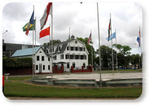

Alguns dos principais Pontos Turísticos do Suriname
St Peter and Paul Cathedral
Paramaribo
Catedral e maior edifício de madeira do continente
Saiba mais

Independence Square
Paramaribo
Praça que abriga construçõs importantes, como o palácio presidencial
Saiba maisPaperpot Nature Park
Hadji Iding Soemitaweg
Parque de flora habundante e habitat de diversos animais
Saiba mais